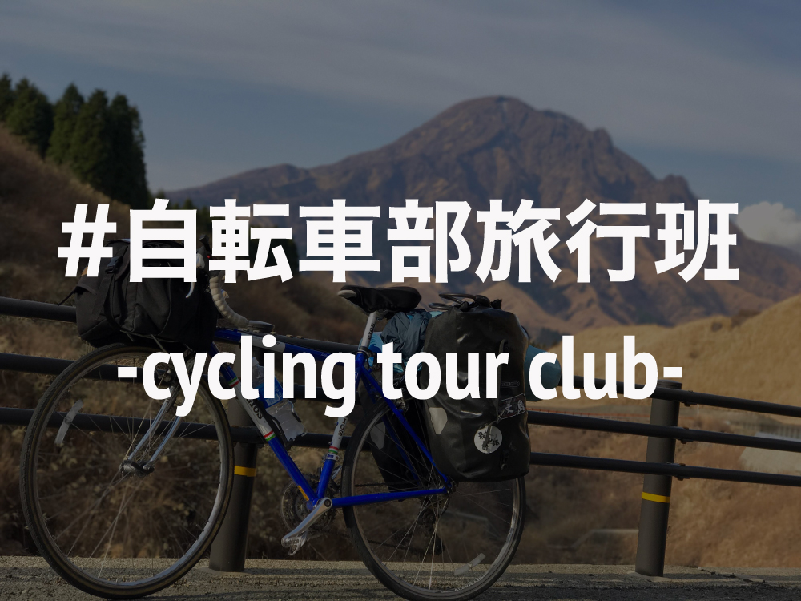
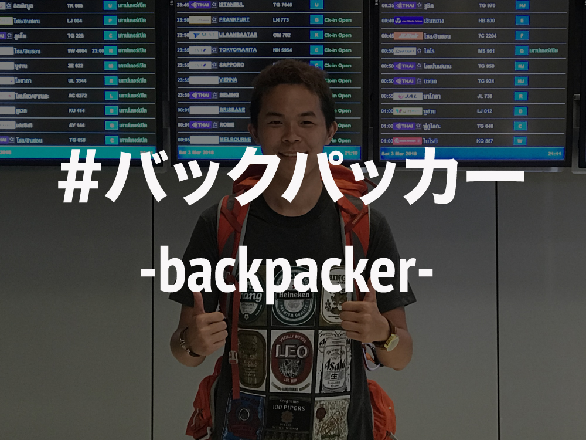

KAKERU SUZUKI

History
Click  to see my events
to see my events
Swipe to see my events
You can choose events from above as well
Key Words

大学では「自転車部旅行班」に所属していました。簡単に言うと、自転車で日本中を旅する部活です。
自転車旅行の写真を見る
大学では「自転車部旅行班」に所属していました。簡単に言うと、自転車で日本中を旅する部活です。
大学1年次の夏合宿では2週間かけて北海道を周り、秋合宿では沖縄本島を一周しました。
春合宿では1ヶ月かけて東京から鹿児島まで縦断し、日本の名所・風景を味わい尽くしました。
マルタ共和国は地中海に浮かぶ島で、ヨーロッパと北アフリカの間に位置している楽園です。
今は独立国ですが、イギリスに統治されていた時代があることから、公用語として英語が用いられています。
首都が世界遺産に登録されているように、綺麗な街並みが続き、地中海のビーチで楽しむこともでき、治安もよく、物価も安いことから留学先としてとてもオススメです。

学生時代はバックパッカーとして世界中を旅してきました。
バックパック旅行の写真を見る
学生時代はバックパッカーとして世界中を旅してきました。
Visited:🇲🇹🇪🇸🇫🇷🇬🇷🇮🇹🇹🇷🇺🇸🇬🇺🇰🇷🇹🇼🇭🇰🇰🇭🇵🇭🇹🇭🇱🇦🇲🇲🇸🇬🇲🇴
新しい国に降り立った瞬間の高揚感が大好きです。

フィリピンのセブ島にある「monstar-academia」という学校で1ヶ月間Webデザインを学びました。
よいデザインについて考えるところから始め、HPやアプリのLPの作成といった実践的なことを学び、それを相手に納得させるように提案するところまでを経験しました。
Skill:Illustrator/Photoshop/XD/Figma
留学で作成したデザインをポートフォリオという形でまとめていますので、見てもらえるとうれしいです。